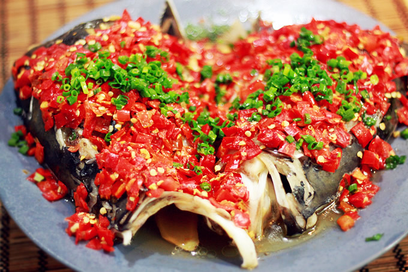
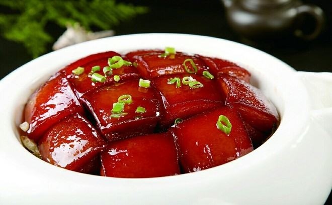
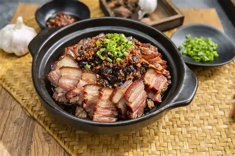

湘菜
菜系简介
湘菜是中国八大菜系之一，源自湖南地区，以香辣、鲜香、浓郁著称。湘菜讲究"酸辣鲜香"，擅长使用辣椒、姜、蒜等调料，烹饪方法多样，包括炒、蒸、炖、煨等。湘菜中的长沙菜、衡阳菜、湘西菜等各具特色。
代表菜品

剁椒鱼头
简介
剁椒鱼头是湘菜经典名菜，选用新鲜鱼头，配以自制剁椒蒸制，鱼头鲜嫩，剁椒香辣，汤汁浓郁，充分体现了湘菜"鲜、香、辣"的特点。
主要食材
- 鳙鱼头 1个
- 自制剁椒
- 姜、蒜、葱
- 料酒、生抽
做法步骤
- 鱼头处理干净，改刀
- 抹盐和料酒腌制
- 铺上剁椒和姜蒜
- 大火蒸10-12分钟

毛氏红烧肉
简介
毛氏红烧肉是湘菜代表，相传为毛泽东喜爱的菜品。与普通红烧肉不同，不放酱油，用糖色上色，色泽红亮，肥而不腻，入口即化。
主要食材
- 五花肉 500克
- 冰糖、料酒
- 八角、桂皮
- 干辣椒、姜
做法步骤
- 五花肉切块焯水
- 炒糖色至棕红色
- 加入肉块和调料
- 小火慢炖1.5小时

腊味合蒸
简介
腊味合蒸是湖南传统名菜，选用湖南特色腊肉、腊鸡、腊鱼等，配以豆豉、辣椒蒸制，腊香浓郁，咸鲜微辣，是湘菜中极具地方特色的菜品。
主要食材
- 湖南腊肉
- 腊鸡、腊鱼
- 豆豉、干辣椒
- 姜、蒜
做法步骤
- 腊味切片焯水
- 与调料拌匀
- 码放碗中
- 大火蒸20分钟